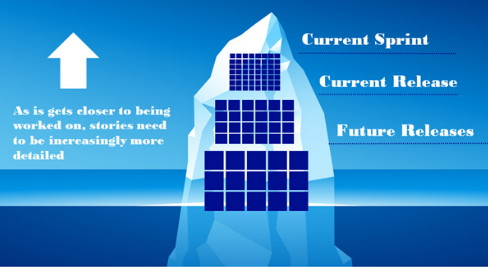
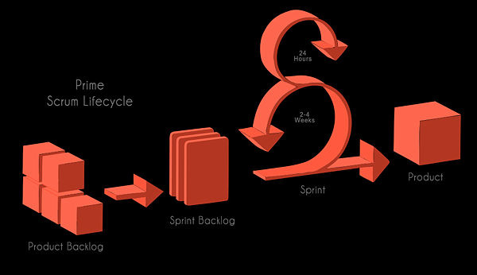
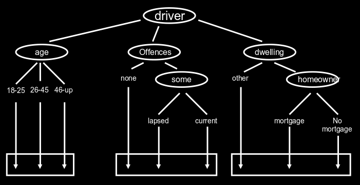
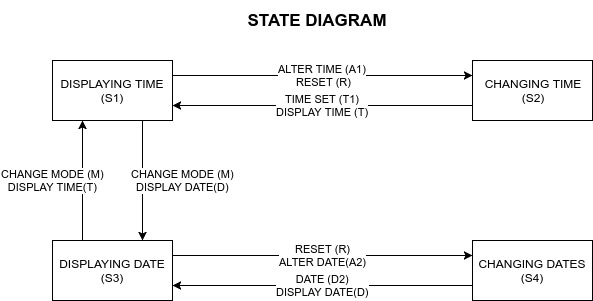

Agile Methodologies
Table of Contents
- 1. Order of software development process
- 2. Agile
- 3. Software
- 4. Clean Code
- 5. User Stories
- 6. Scrum SDLC
- 7. Waterfall SDLC
- 8. V-Model SDLC
- 9. Tests
- 10. Testing with Agile
- 11. Test Case Design and Coverage Techniques
- 12. Test Driven Development
- 13. JUnit
- 14. Configuration management
- 15. Pair programming
1 Order of software development process
- User story, creates:
- Method Signature (name, inputs, return type)
- Black Box, employ test techniques (EP, BVA, CT, etc.)
- Test design
- Write the test code
- Write product code
- Run tests
- Fix code
- Run tests again
2 Agile
2.1 Agile methodologies comparison
| Agile Methodology | Emphasis |
|---|---|
| Extreme Programming (XP) | Efficiency, customer focus and feedback, and quality |
| Scrum | Teaming, organizing work |
| Feature-Driven Development | Iterative development of user-focused features |
| Dynamic Systems Development Method (DSDM) | Structured approach to rapid development, collection of best practices |
| Lean Software Development | Eliminate work that does not create customer value |
| Kanban Method | Visualize and manage workflow, just-in-time development |
| Crystal Family | People, communication, process rigor maps to product and organizational dynamics |
2.2 Definition
- Agile organization is quite simply one that is adaptive to change
- Agile software development organization is one that uses Agile tools, techniques and cultural norms to develop their products
- Becoming an agile organization is more of a journey than a destination
2.3 Sprint
- Single iteration of the Agile process two to four weeks maximum
- Design, Code, Test. Sprint is executed in a single increment.
- Sprint also develops only a subset of all the User Stories.
2.4 Principles of agile
- Customers involvement
- Incremental delivery
- People not process
- Embrace change
- Maintain simplicity
3 Software
3.1 Software definition
Software comprises of:
- Planning
- User requirements/user stories
- Design
- Coding
- Testing
3.2 Software Engineering
- Software: Computer program, documentation meets requirements
- Activities of software engineering: requirements, design, coding, testing
3.3 Software Products
- Generic products: stand alone, made for general public
- Customized: specific software e.g. embedded systems
3.4 Process description
- Products (outcomes)
- Roles (responsibilities)
- Pre and post conditions
3.5 Software process
- Specification
- Design
- Validation
- Evolution
3.6 Software Attributes
- Functional
- Non-Functional (availability, reliability, etc.)
- Maintainability
- Dependability and Security
- Efficiency
- Acceptability
3.7 Design
- Describes how different functions come together
- Describes specifically how functions work
- Describes specifically what functions do and how they "look" like
- Sprint(development) has a low level design
- The general concept is the high level design
3.8 Quality Product
Must meet the customers criteria, meaning that it meets the product backlogs requirements
and the sprint backlog's requirements.
4 Clean Code
It consists of many principles, some involve:
- refactoring
- syntactically correct
- neat, elegant and efficient
- logic should be straightforward
- error handling strategies, exception handling
- good descriptions of variables, classes, methods
- dependencies minimal to ease maintenance
- clean code reads like well-written prose
- clean code is simple and correct
- runs and passes all the tests
- contains no duplicates
- make easy search-able variable/class/method names
- usually classes are names with a noun, methods with a verb
5 User Stories
5.1 Definition and values
- In Scrum, the requirements are called user stories
- Have decent knowledge of the domain to produce decent user stories (eg. Game, Cloud, etc.).
- A user story, by definition, must be small enough so that it can be designed, coded, and tested within a single sprint
- A user story is a powerful combination of Who What and Why, so that when the team designs, they have much more to go on than the traditional way of documenting requirements
- The structure of a user story invites conversation and negotiation
- Can be modified over time
- Nouns in a user story imply a class, verbs imply methods
5.2 Characteristics
It is said that: Product owners need to INVEST in a good user story.
The following characteristics help to measure how good a user story is:
- I ndependent, must be able to stand alone, must be unique, must be a feature or a component of a feature
- N egotiable, must be open to negotiation, it should not be strict
- V aluable, does it add value to the business, if not it is probably not worth it
- E stimatable, is it too big or too vague? The complexity and length of time must be reasonable
- S mall, should be small enough to be implemented within a single sprint
- T estable, is it enough of a feature that it can be tested and verified that it works correctly?
5.3 Explanation of user story questions
Short and simple
- What?, the requested feature or a component
- Who?, the perspective, who will benefit from the feature/component?
- Why?, the value of the user story
- When?, not often used but if the user story has a high priority then the When? should be used
5.4 Basic Template
As a <type of user>
I want <some goal>
So that <some reason>
5.5 Epics
- Most of user stories start as epics, it is simply a user story that is too big. Epics are general user stories with bigger concepts and a broader spectrum
- Most of ideas start as epics (parent) and then further down the road they get broken down to regular (child) user stories
- It is OK for an epic to sit on the backlog for a long duration of time, however, after about six months (if the progress is decent), the product owner or the scrum master need to start breaking down that epic
- There are systems is place that help with tracking parent and child user stories, this allows for a better understanding of the features
5.6 Acceptance Criteria
- These are the tests that the product owner will use to grade whether a user story's development is successful
- Acceptance criteria give the team much more information about the product owner's vision
- Conversations and discussion are strongly encouraged
- This part is really hard to be accomplished in a standard Waterfall model
- They allow to describe conditions that need to be fulfilled
5.7 MoScoW rules
- Must have: all features in this group must be implemented
- Should have: features of this priority are important but can be omitted due to time and resource constraints
- Could have: features that enhance the system with greater functionality but there is no strict delivery timeline
- Want to have: features that would assist only a limited group of users, thus their business value is much smaller
5.8 Backlog
Collection of Epics and detailed User Stories

6 Scrum SDLC
6.1 Characteristics
- Focus on teaming and organizing work
- Despite huge popularity, many people are still uncertain about what it entails
- Emphasis on time constraints called Time Boxes which help organize time
- Usage of sprints for completing chunks of work
- Design, development, test and customer validation all done within a single sprint
- Progress tracking via burn down and burn up charts
- Daily stand-ups

6.2 Stages
Stage I
Product Backlog
Start with a minimum of 5 user stories (hypothetically).
Product Backlog is divided into epics and user stories.
Stage II
Sprint Backlog
Spring backlog. It is a subset of the Product Backlog
It is a series of features to be implemented in the current sprint.
Stage III
Daily Scrum meetings
Usually 15 min long, happen every 24h.
(What have I done yesterday? What am I doing today? Any problems with the current task?)
Sprints 2-4 weeks duration.
Steps during a sprint:
- Design
- Code
- Test
Stage IV
Potentially shippable product
6.3 Roles In Scrum
- Agile has a firm distinction between what the Product Owner owns and what the Scrum Team owns
- Product Owner is responsible that the company builds the right product The What
- The Scrum Team is responsible for ensuring that the product is build correctly, or the right way The How
The product owner
- Satisfy the customer.
- Active engagement from the "business" perspective
- Should own the product on behalf of the company
- Defines most of the Requirements and User Stories
- Product Owner needs to be able to have the vision of what kind of product they want
- Product owner has the final say in the product
- Is responsible for and owns the Product Backlog
- Prioritizes the User Stories according to the current situation (marketplace, competition, evolution)
- Priorities of the product owner by business value:
- Increase revenue
- Expansion of addressable market
- Decrease cost
- Increase customer satisfaction
- Increase processing speed
- Increase stability of the application
- Improve usability
- Problems may occur for the product owner:
- workplace politics
- pressure
- executive opinions
- etc.
- The product owner accepts the results of the sprint:
- Avoid misinterpretation of User Stories
- Product owner may reject due to a lack of a "nice" design, missing expectations
- Release Management
Is a way of packaging different features or version of software into releases
Scrum Master
- Main roles
- Leads the team and works through any issues during a sprint
- Specific responsibility varies depending on the size of the team and the experience of the team
- Suggested personality traits:
- Willing to make decisions
- Actively work to remove any roadblocks or impediments
- High initiative
- Determination
- Stubbornness
- Impediments
- Removing impediments is especially crucial as it leads to increased work being done. Most of people do not like to be interrupted when working, and this comes with the so called restart cost after the interruption. Scrum Master attempts to minimize this effect, which leads to more work being done in a much smaller time frame.
- Stand ups
- Scrum master facilitates the daily stand-up and is responsible that the meeting remains brief and focused and that all team members have a chance of contribution
- Encourages a quiet teammate
- Prompts the active teammate to give everyone a chance
- Makes sure that all voices are heard
- Scrum master facilitates the daily stand-up and is responsible that the meeting remains brief and focused and that all team members have a chance of contribution
- The link
- Scrum master is the coordination link between the Team and the Product Owner. Usually there are a lot of question regarding the product or the currently developed User Stories. Scrum master should have answers to all of those questions.
- Scrum master should be the first person that hears about a change and is responsible to notify the team about any changes
- Minimizes the surprise factor
- Performance
- Address root causes of lack of performance (be it testing or incomplete documentation, coding issues)
- Holds people accountable for honoring their commitments
The Team
- Should consist of 5-9 people, bigger project might require two or more teams, which adds complexity
- Be transparent
- Be trust-worthy
- Be talented so that the workload is as even as possible
- Teamwork oriented
- Cross-functional so that the requirements can be designed, coded and tested within a single sprint
- As static as possible, the membership should not change, leads to potential changes in vibe, respect and trust, all of which affect the entire team and most importantly productivity
- Working Agreement, creation and topics
- Relationship definition via first point collaboration
- Reflects the values and commitments of the team
- Time and location of daily meetings
- Testing strategies
- Infrastructure plans
- Norms (estimates, be on time, help when needed)
- How to address bugs
- Product owner availability (phone, office hours, attendance etc.)
- Capacity plan for initial Sprints
- Fist of Five
- Whenever there is a discussion where there are a lot of options, the team votes
- The general concept is that people vote with the amount of fingers on their hands:
- 5 fingers - I am all in
- 4 fingers - I buy into the option and I support it
- 3 fingers - I have reservations
- 2 fingers - I have greater reservation and I need further discussion
- 1 finger - I do not support the vision
- Self-Organizing
The team decides how they will work together, but also are empowered to define and evolve their roles within the team.
Self-organizing teams can easily outperform bigger teams. This comes from the fact that people do what they are good at and not what they have been told to do (to an extent, obviously).
Family-sized groups naturally self-organize:
- Members are committed to clear, short-term goals
- Members gauge progression
- Members observe contribution
- Members give each other feedback
- Should be consistent in Membership
- Better team vibe and understanding
- Better estimates
- New member needs to blend in and catch-up
- Task selection
- In traditional Waterfall, often the manager assigns the tasks
- In Agile the team member picks his own task and is fully responsible for that task's completion and its ownership
- Picking own assignments leads to a better job satisfaction
- Promotes cross-training, less experienced people can pick new tasks for themselves and be mentored by more experienced members
6.4 Extended Team Members
Standard/Core Roles
- Product Owner
- Scrum Master
- The Team
Extended contribution
- Project sponsors
- Stakeholders
- Project Manages
7 Waterfall SDLC
- Plan driven
- Simplistic model
- Assumes predefined user requirements
- Sequential model (one task needs to complete before moving onto the next one)
- One process is executed at a time
- The biggest cost is the repetition of previous steps if a flaw is found somewhere down the line
8 V-Model SDLC
- Plan driven
- Like the waterfall it assumes predefined user requirements
- Sequential model
- The V-Model tests on every process (step)
- Early tests help with estimation and understanding the user requirements better
- Tests are always performed against a particular object
9 Tests
9.1 Testing Observation
- Testing can show that defects are present, but cannot completely exclude them
- Testing reduces the probability of undiscovered defects
- All the defects are impossible to be found
- Poor testing can lead to none/few bugs found
- Exhaustive testing is not practiced, risk and priorities testing is normally implemented
- Testing should be effective and also efficient (not to repeat the same tests)
- Testing should start as early as possible (preferably during the requirements phase)
- Testing is context dependent
- Testing and the design criteria could be met perfectly, however there could be a mistake and the user can call it a failure due to incorrect specification
9.2 Test has the following characteristics
- object under tests
- test objective
- definition of the inputs
- definition of the expected outputs
- definition of the test environment
9.3 Execution of a test
- Actual output is generated/observed
- Tester checks if the output is correct
9.4 Expected output vs Actual output
- Requirements define what the software is required to do
- Without requirements tests cannot be designed
- Requirements are necessary to write code
- Testers need requirements to:
- Identify what tests are needed
- Compare test results with requirements
- If an expected result is not defined it can be misinterpreted as a fault and…
- If an unexpected result is not defined it can be misinterpreted as a properly working code
- Expected results must be defined before the execution, derived from the specification documents, design document, or code
9.5 Debugging
- Is a development activity that identifies the causes of a defect
- Repairs the defects in the code
- Checks that the defect has been fixed correctly
- Retesting to ensure that the failure is resolved
9.6 Error, defects, fails
- Developer makes an ERROR
- … and injects a DEFECT into the software…
- … and the fault causes the software to FAIL
Defects MAY result in failures, BUT not all defects do so!
Errors
- Software Engineer producing an incorrect result from Requirements or the Design Document
- When errors are made they introduce defects into the code
Defects (aka Faults/Bugs)
- Manifestation of human error
- Caused by:
- Requirements
- Design
- Coding errors
- Defects are static, they are characteristics of the code they exist in
- Discovered by inspection or by deducing their existence from failures…
Failures
- Deviation of the software from its expected delivery or service or when software does the 'wrong' thing
- Defects cause software failures when the program is executed with a set of inputs that expose the defect
9.7 Acceptance Testing
- Express the details that result from conversations about requirements
- One of the purposes is to fill in the details of a User Story
- Can provide basic criteria that provide verification guidelines, which in a consequence helps to put just the right amount of time into the test
- Provide a great deal of information that the coders can use
- Can work as reminders of what is the actual focus of a User Story
- Should be written before the coding starts to assist in the previous point
- Usually written at the following times:
- Customer or the team talk about a user story and want to capture the details
- As part of a dedicated effort before the sprint starts
- Whenever new tests are discovered during programming a user story or even after programming the story
- Before coding a good idea is to ask:
- What else do the programmers need to know about the story?
- What am I assuming about how the story will be implemented?
- Are there circumstances where this story might behave differently?
- What can go wrong during the story?
- Acceptance Tests need to be specified by the customer, as he has the final say in the product itself
- Customer can work with the team to seek assistance in designing the tests, but the idea itself must come from the customer
- With User Stories it is crucial to think of testing design as a part of the development, not something that is done after coding
- Product owner brings knowledge of the goals of the organization
- The Tester brings his suspicious mind-set
- Tests should keep on getting written for as long as they add value and clarification
- Minimally should be executed at the end of every sprint
10 Testing with Agile
- Design code that will be thoroughly tested to reduce the amount of mistakes.
- Design tests that will cover (hopefully) as many test cases as possible.
Testers Test
Developers Debug
10.1 Dynamic Testing and SDLC
From the lowest to the highest level:
- Program (unit, component, module) testing: lowest level based on individual units and code (mostly white-box)
- Integration or Component Integration testing: test of communications of classes and modules
- System testing: tests of the entire system:
- Non-functional (eg. performance, backup and recovery, stress)
- Functional, tests the functionality as a whole
- User acceptance testing: test with a live user
10.2 Static and Dynamic Testing
- Both can be used to achieve similar goals
- Both will provide information in order to improve the system
Static
- Static, testing software without executing it. Hand tracing etc.
- Reviewing documents (especially Requirements), source code and static analysis
- Dry testing, without the actual framework
- Static tests do not execute the software
Dynamic
- Dynamic, testing by executing the software.
- Testing on the actual framework
- Creating and executing test code to test parts or all of the system under test
10.3 Role of testing
As there can be an infinite amount of tests, usually we have to focus on time management. Therefore we should specifically test around the business critical parts and the riskiest parts of the software.
- Testing rigorously against the requirements and the design criteria and the documentation
- Assists in providing a better quality product
- Employing tests to identify defects
- Fixing defects found
- Can be used to measure the quality of a product
- Designing tests that find faults
- Counting the faults
- Objective assessment of the quality based on the tests and their results (faults found)
- May be required to meet contract requirements, legal requirements and/or industry standards
- Developer does not get paid until the software passes all the acceptance tests
- Acceptance tests help to determine whether the developers build the requirements correctly
- Software requirements may be imposed (testing can provide evidence of such):
- Laws governing different industry domains must be obeyed
- Domain/industry regulations/standards must be adhered
10.4 Implement different test techniques (types of tests)
Both black box and white box belong to the dynamic testing.
- Black box testing, design of testing of specification and requirements
- White box testing, design of testing the code
- In some cases people prioritize one or the other and focus on the difficult/risky parts first
11 Test Case Design and Coverage Techniques
- Techniques are defined to help design test cases and to quantify the tests that need performing (coverage)
- These techniques allow to better understand the specification and comparison of software testing
- Usually try to achieve 100% coverage with each technique
11.1 Coverage
- Coverage Item: an entity or property that is being tested
- Coverage: the degree, expressed in percents, which specifies to which extent the testing has been induced
- Coverage (measurement) Tool: a tool that provides an objective measure of what elements have been exercised by a test suite
11.2 Typical Black Box
- Inputs
- Processing
- Outputs
11.3 Black Box
Equivalence partitioning
- Design
- Based on a premise that the inputs and the outputs can be partitioned into classes that will be treated similarly, according to the component's specification.
- A test case may have any number of partitions.
- A test case needs to have the following:
- the input(s) to the component
- the partitions exercised
- the expected outcome of the test case
- Steps
- Identify variables and their types (values it takes)
- Identify range per variable (each range is a partition), negative and positive outcomes.
- For instance the
inttype would have 3 partitions: positive numbers, negative numbers and zero
- For instance the
- Identify minimum amount of test cases
- Design test templates
- Test Template
Test number: addition001
Test object: adding two positive numbers
Input: numbers 5 and 5
Output: 10
- Example
Example of a method that adds two numbers together (based on a user story which asks for addition of two positive numbers):
Test 1 Test 2 Test 3 Partition Positive Zero Negative Input 5 and 5 0 and 0 -5 and 05 Expected 10 error error
Boundary value analysis
- Design
- BVA is a technique in which tests are designed to include representatives of boundary values
- Experience shows that there are usually problems at boundaries of equivalence partitions
- The MAX and MIN values of a partition are its boundary values as well
- Expected inputs and outputs should be taken from the specification, they are then grouped into partitions (using Equivalence Partitioning)
- Each partition or set should be processed the same way
- Always attempt to achieve 100% in BVA, especially when the partitions are number based
- Example
In the case of an
intwhich has 3 partitions, there are 4 boundaries:
- at
MIN_INT - at -1
- at +1
- at
MAX_INT
Each boundary should have 3 test, at the boundary itself and also just above and just below the boundary. It is data type dependant, eg.
Stringwould not have less than zero string length as one of the tests.
- at
Classification Trees
- Design
- Appropriate where functionality depends on combinations of conditions
- Provides a systematic method to create test case specifications based on a problem definition
- Is a test that employs cross referencing
- Hypothetically if there is a method with 3 variables and 3 partitions per variable, then there are 27 possible tests to verify all the possibilities. However, some test might not have to be made to fully verify the method thanks to cross-referencing.
- Logic is applied to determine how many test cases are actually required, sometimes some variables exclude the usage of other variables and thus minifies the amount of test cases needed
- Steps
Two steps are generally defined in CT:
- Identification of test relevant aspects and their corresponding values as well as
- Combination of different classes from all classifications into test cases
- Example
- In the case below an assumption can be made that if someone has a severe offence they are unlikely to have a mortgage
- If you are 18 you are unlikely to have a mortgage
- So on…..

- Coverage
- Maximum Criterion is the maximum amount of test cases
- A reasonable amount of test cases lies somewhere in between the minimum and the maximum amount of test cases
- The objective is to determine a sufficient but minimum amount of test cases
- It is not necessary to create test for every combination
- Benefits
- Simple way of organizing Equivalence Partitioning
- The test case matrix is an easier way of understanding and identifying conditions and duplicate tests
- Not really a method
State transition testing
- Diagram and transition change tests

0-switch coverageneeds to cover one transition and two states1-switch coverageneeds to cover two transitions and three states (basically going from one state to another and then to the next one, for the above diagram it is 10 tests in total)2-switch coverageneeds to cover three transitions and four states
- State table
- example of state change from S1 – change-time –> S2 – time-set –> S3
- verify the positive and negative tests
Test Case 1 2 3 4 5 6 Start State S1 S2 Input CM R Output D AT Next State S2 S3 - state change table
State CM R TS PS S1 S2/D S3/AT S1/null S1/null S2 S3 S4
Decision Table Testing
- Brief example
- this type of testing is organised around testing conditions
- an example would be: "Apply a 5% discount to any order above 100eur, and a 12% discount to Premium customers. Premium customers get a free delivery. Orders by Premium customers above 100eur also cause for the Premium customer to receive a 30eur voucher". This implies two conditions don't apply a condition below 100eur and do apply a discount above 100eur
- Conditions
- Premium Customer ?
- Order over 100eur ?
- Actions
- 5% discount
- 12% discount
- Free delivery
- 30eur voucher
- Table
Condition 1 2 3 4 Premium Customer T T F F Order > 100eur F T F T Actions 1. 5% discount F F F T 2. 12% discount F T F F 3. Free Delivery T T F F 4. 30eur voucher F T F F
11.4 White Box
- Testing based on an analysis of the internal structure of the component or system
Statement Coverage
- The purpose of the test is to run the code and check if all the statements execute at all
- ST does actually execute executable statements. Example of some of the statements are:
- Assignments
- Loops and selections
- Procedures and function calls
- Variable declarations with explicit initialization
- Else, EndIfs do not count as executable statements
Branch (decision) Coverage
- Specifically designed to test branches
- 100% branch coverage means that all the possible paths of the branches have been executed
- The purpose is very much alike the Statement Coverage Test, the main difference is that this test needs to run 2 tests per every
IFstatement to check for coverage
McCabe's Cyclomatic Complexity Metric
- Checks all the possible paths within a program, however the depth can be specified
- The number of independent paths through a program is the Cyclomatic Complexity (V) and is defined as: L - N + 2P, where:
- L is the number of edges/links in a graph
- N is the number of nodes in a graph
- P is the number of disconnected parts of the graph (eg. a called method or a function)
11.5 Regression test
Rerun of the whole tests, after finding faults and fixing them
12 Test Driven Development
- Originated with XP and has become a widely adopted approach for developers
- In TDD the test code is written first and only then the product code is written to pass the written tests
- This approach encourages to focus on the requirements before writing code and thus the code written is exactly what it needs to be to pass the test
- Because of the mind set of the programmer the code passes a quality check while it is being written
12.1 Unit Tests
TDD revolves largely around writing Unit Tests before the coding starts
- Create tests that demonstrate that the code works
- Create tests that hold their value over time
- Use existing tests to create new ones
12.2 Unit Test Characteristics
- Object under test: for example a method or a class
- Test environment: an IDE for example
- Inputs: specification based, values depend on the objectives
- Expected output: Determined by the input and the specification
12.3 TDD Steps
Add a Test
- Each new feature starts with a test
- This tests fails as it is written before the code
- Understand the specification and the requirements to write the test
Run all the tests and see the new test fail
- Validate that the code fails at the correct moments and does not pass mistakenly
- This step tests the test itself
Write the code
- Write code that will pass the test
- The code does not need to be perfect
- The code is only designed to pass the test, it should not have any extra untested functionality
Run the automated tests and see them succeed
- If all tests pass, the programmer is confident that the written code meets the requirements
Refactor code
- Clean up the code, optimize for speed, efficiency and code readability
- Re-run tests to make sure that refactoring did not break any existing functionality
Repeat Cycle
- Start with a new test and proceed as before
- Adjust the size of steps if necessary, depending on confidence
13 JUnit
Right click the class and make a new JUnit3 test.
Throwing an error in the main code, in this the main code being a file with the add method, file MyMath.java
public static int add(int a, int b) throws Exception{ throw new RuntimeException("Message"); }
In the junit (as comment) create the test templates as follows:
public class MyMathTest extends TestCase { // Test number: 1 // Test objective: add two positive numbers // Inputs: number1 = 5, number2 = 12 // Expected output: 17 public void testAdd001() { try { assertEquals(17, MyMath(5, 12)); } catch (Exception e) { fail("Exception handling failure in the positive partition..."); } } // Test number: 2 // Test objective: add two zeroes // Inputs: number1 = 0, number2 = 0 // Expected output: error msg = "Zero invalid" public void testAdd002() { try { int result = MyMath.add(0, 0); fail("Exception handling error in the zero partition..."); } catch (Exception e) { assertEquals("Zero invalid", e.getMessage()); } } // Test number: 3 // Test objective: add two negative numbers // Inputs: number1 = -5, number2 = -12 // Expected output: error msg = "Negative values invalid" public void testAdd003() { try { int result = MyMath.add(-5, -12); fail("Exception handling error in the negative numbers partition..."); } catch (Exception e) { assertEquals("Negative values invalid", e.getMessage()); } } }
14 Configuration management
The purpose of version control is to keep older versions of the same file.
Basically the idea is to have a persistent history of the same file (like a persistent undo/redo).
14.1 Version control
Is a system that records changes to a file or set of files over time so that you can recall specific version later.
It allows to revert files the their previous state.
It allows to revert an entire project to a previous state.
Allows to see who made any recent changes.
14.2 Types of version control
- Local, saved on a local computer
- Centralized Version Control System, it allows for all the management to be done on the server. Advantage is that many people can work on the same files. They can be then merged together later.
- Uses a checkout system, which 'serves' files to users.
- If two users use a the same checked-out file it needs to be merged (potential issues via overwrite)
- Distributed Version Control Systems, is similar to VCS, but each user receives an entire copy(clone) of the repository
- After changes have been made to a local repo, the repo then needs to be staged and then pushed to the server repo
- After changes have been pushed, they need to be merged with potential conflicts or the master branch
- Pull requests are then used to pull the changes back to the local repo
14.3 Git Project Structure
- Unstaged, files being currently worked on
- Staged, files that will be committed to the repository
- Commit, files that have been 'version controlled' into the repo
15 Pair programming
- Method of programming in which two people work at a single keyboard
15.1 Roles
- The driver, types on the keyboard
- The observer, observes the creation of code, checks for errors and overlooks the design. Do not dictate the code
15.2 Benefits
- better code: simpler design, fewer bugs
- higher morale: more fun!
- shared knowledge
- better time management
- higher productivity
- builds trust
- better quality product
- both programmers are learning off each other
- leads to less of an overload during the code creation as only one person at a time needs to think about either the small detail or the bigger picture
15.3 Process
- Start with a reasonably well defined task (also relatively small) before sitting down, something that can be completed within an hour or two
- Might want to outline what you plan to do before coding
- Agree on a tiny goal at a time, something that can be completed quickly, it is to be a mutual decision
- Rely on your partner, support your partner
- The driver should forget about the bigger concept, should focus only on the small task assigned. Should trust that the observer has his back in terms of the bigger picture
- The observer should constantly read the written code and think of possible larger issues, bugs and ways to simplify the code. When the observer notices that the code is unreadable, he/she should notify the driver right away!
- Talk a lot: ask for implementation ideas, ask how to solve the problem, bring up alternatives, clearer names for variables and subroutines, suggest smaller steps
- Sync up frequently: getting out of sync is very frequent, make sure that you constantly know what the current task is. More than five minutes of out of sync means that you are probably better of going solo, meaning BAD!
- Switch roles often - at least every half hour. This keeps both of the programmers engaged. Also driving for a long duration can be very tiring.